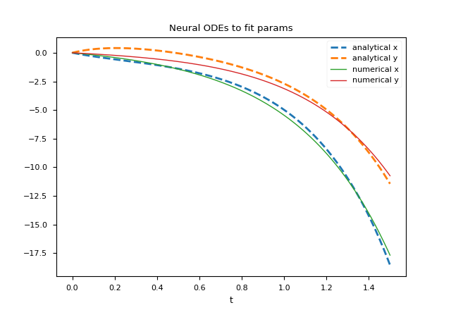

Experiments with Neural ODEs in Python with TensorFlowDiffEq
Neural Ordinary Differential Equations (abbreviated Neural ODEs) is a paper that introduces a new family of neural networks
in which some hidden layers (or even the only layer in the simplest cases) are implemented with an ordinary differential equation solver.
This post shows an example written in Python with TensorFlowDiffEq (there will be more in the future) that uses some ideas described in the paper Neural ODEs to solve a problem of approximating the mapping
between an input and an output in a given scenario.
All of the various code snippets described in this post require Python version 3.x, TensorFlow 2.x, TensorFlowDiffEq package and the following packages: NumPy, MatPlotLib.
To get the code see paragraph Download the complete code at the end of this post.
If you were interested in seeing the solution of the same problems in Julia see the post Experiments with Neural ODEs in Julia on this website.
Conventions
In this post the conventions used are as follows:
- $t$ is the independent variable
- $x$ is the unknown function
- $y$ is the second unknown function
- $x$ and $y$ are intended to be functions of $t$, so $x=x(t)$ and $y=y(t)$, but the use of this compact notation, in addition to having a greater readability at a mathematical level makes it easier to "translate" the equation into code
- $x'$ is the first derivative of x with respect to $t$ and of course $y'$ is the first derivative of y with respect to $t$
Experiment #1: to train a system of ODEs to meet an objective
A multilayer perceptron (abbreviated MLP) is an appropriate tool for learning a nonlinear relationship between inputs and outputs whose law is not known.
On the other hand, there are cases where one has a priori knowledge of the law that correlates inputs and outputs, for example in the form of a parametric system of differential equations:
in this situation a neural network of type MLP does not allow to use such knowledge while a network of type Neural ODEs does.
The application scenario
The application scenario is as follows:
- A dataset that contains the inputs and outputs
- A law that associates input and output in the form of a parametric system of differential equations
- Determine appropriate parameter values so that the system obtained by replacing the formal parameters with the determined values best approximates the mapping between input and output.
In this post, the law is intentionally not a famous law, but is the parametric system of two first-order equations and eight parameters shown in the following paragraph.
The problem to be solved
Let the following parametric system of two ordinary differential equations with initial values be given
which represents the law describing the behavior of a hypothetical dynamical system:
$$ \begin{equation}
\begin{cases}
x' = a_1x + b_1y + c_1e^{-d_1t}
\\
y'= a_2x + b_2y + c_2e^{-d_2t}
\\
x(0)=0
\\
y(0)=0
\end{cases}
\end{equation} $$
Obviously this is a demo whose purpose is to test the goodness of the method, so to prepare the dataset
we arbitrarily set eight parameter values, for example these:
$$ \left[\begin{matrix}a_1 \\ b_1 \\ c_1 \\ d_1 \\ a_2 \\ b_2 \\ c_2 \\ d_2 \end{matrix} \right] =
\left[\begin{matrix}1.11 \\ 2.43 \\ -3.66 \\ 1.37 \\ 2.89 \\ -1.97 \\ 4.58 \\ 2.86 \end{matrix} \right] $$
and knowing that with such parameter values the analytical solution is as follows:
$$ \begin{equation}
\begin{array}{l}
x(t) = \\
\;\; -1.38778 \cdot 10^{-17} \; e^{-8.99002 t} - \\
\;\; 2.77556 \cdot 10^{-17} \; e^{-7.50002 t} + \\
\;\; 3.28757 \; e^{-3.49501 t} - \\
\;\; 3.18949 \; e^{-2.86 t} + \\
\;\; 0.258028 \; e^{-1.37 t} - \\
\;\; 0.356108 \; e^{2.63501 t} + \\
\;\; 4.44089 \cdot 10^{-16} \; e^{3.27002 t} + \\
\;\; 1.11022 \cdot 10^{-16} \; e^{4.76002 t} \\
\\
y(t) = \\
\;\; -6.23016 \; e^{-3.49501 t} + \\
\;\; 5.21081 \; e^{-2.86 t} + \\
\;\; 1.24284 \; e^{-1.37 t} - \\
\;\; 0.223485 \; e^{2.63501 t} + \\
\;\; 2.77556 \cdot 10^{-17} \; e^{4.76002 t} \\
\end{array}
\end{equation} $$
(verifiable online via Wolfram Alpha)
you are able to prepare the dataset: the input is a discretized interval of time from $0$ to $1.5$ step $0.01$,
while the output consists of the analytical solutions $x=x(t)$ and $y=y(t)$ for each $t$ belonging to the input.
Once the dataset is prepared, we forget about the values of the parameters and the analytical solution and we pose the problem
of how to train a neural network to determine an appropriate set of values for the eight parameters in order to best approximate
the non-linear mapping between input and output of the dataset.
Solution implementation
The parametric system of differential equations is already written in explicit form, and in Python with TensorFlowDiffEq it is implemented like this:
def parametric_ode_system(t, u, args):
a1, b1, c1, d1, a2, b2, c2, d2 = \
args[0], args[1], args[2], args[3], \
args[4], args[5], args[6], args[7]
x, y = u[0], u[1]
dx_dt = a1*x + b1*y + c1*tf.math.exp(-d1*t)
dy_dt = a2*x + b2*y + c2*tf.math.exp(-d2*t)
return tf.stack([dx_dt, dy_dt])- Input: $t \in [0, 1.5]$ discretization step $0.01$
- Boundary conditions: $x(0)=0; y(0)=0$
- Initial values of any parameters; for convenience we set them all equal to $1$.
t_begin=0.
t_end=1.5
t_nsamples=150
t_space = np.linspace(t_begin, t_end, t_nsamples)
t_space_tensor = tf.constant(t_space)
x_init = tf.constant([0.], dtype=t_space_tensor.dtype)
y_init = tf.constant([0.], dtype=t_space_tensor.dtype)
u_init = tf.convert_to_tensor([x_init, y_init], dtype=t_space_tensor.dtype)
args = [tf.Variable(initial_value=1., name='p' + str(i+1), trainable=True,
dtype=t_space_tensor.dtype) for i in range(0, 8)]def net():
return odeint(lambda ts, u0: parametric_ode_system(ts, u0, args),
u_init, t_space_tensor)The training settings are:
- Optimizator: Adam
- Learning rate: $0.05$
- Number of epochs: $200$
- loss function: sum of squares of differences
learning_rate = 0.05
epochs = 200
optimizer = tfko.Adam(learning_rate=learning_rate)
def loss_func(num_sol):
return tf.reduce_sum(tf.square(dataset_outs[0] - num_sol[:, 0])) + \
tf.reduce_sum(tf.square(dataset_outs[1] - num_sol[:, 1]))
for epoch in range(epochs):
with tf.GradientTape() as tape:
num_sol = net()
loss_value = loss_func(num_sol)
print("Epoch:", epoch, " loss:", loss_value.numpy())
grads = tape.gradient(loss_value, args)
optimizer.apply_gradients(zip(grads, args))Here is the complete code:
import numpy as np
import matplotlib.pyplot as plt
import tensorflow as tf
import tensorflow.keras.optimizers as tfko
from tfdiffeq import odeint
def parametric_ode_system(t, u, args):
a1, b1, c1, d1, a2, b2, c2, d2 = \
args[0], args[1], args[2], args[3], \
args[4], args[5], args[6], args[7]
x, y = u[0], u[1]
dx_dt = a1*x + b1*y + c1*tf.math.exp(-d1*t)
dy_dt = a2*x + b2*y + c2*tf.math.exp(-d2*t)
return tf.stack([dx_dt, dy_dt])
true_params = [1.11, 2.43, -3.66, 1.37, 2.89, -1.97, 4.58, 2.86]
an_sol_x = lambda t : \
-1.38778e-17 * np.exp(-8.99002 * t) - \
2.77556e-17 * np.exp(-7.50002 * t) + \
3.28757 * np.exp(-3.49501 * t) - \
3.18949 * np.exp(-2.86 * t) + \
0.258028 * np.exp(-1.37 * t) - \
0.356108 * np.exp(2.63501 * t) + \
4.44089e-16 * np.exp(3.27002 * t) + \
1.11022e-16 * np.exp(4.76002 * t)
an_sol_y = lambda t : \
-6.23016 * np.exp(-3.49501 * t) + \
5.21081 * np.exp(-2.86 * t) + \
1.24284 * np.exp(-1.37 * t) - \
0.223485 * np.exp(2.63501 * t) + \
2.77556e-17 * np.exp(4.76002 * t)
t_begin=0.
t_end=1.5
t_nsamples=150
t_space = np.linspace(t_begin, t_end, t_nsamples)
dataset_outs = [tf.expand_dims(an_sol_x(t_space), axis=1), \
tf.expand_dims(an_sol_y(t_space), axis=1)]
t_space_tensor = tf.constant(t_space)
x_init = tf.constant([0.], dtype=t_space_tensor.dtype)
y_init = tf.constant([0.], dtype=t_space_tensor.dtype)
u_init = tf.convert_to_tensor([x_init, y_init], dtype=t_space_tensor.dtype)
args = [tf.Variable(initial_value=1., name='p' + str(i+1), trainable=True,
dtype=t_space_tensor.dtype) for i in range(0, 8)]
learning_rate = 0.05
epochs = 200
optimizer = tfko.Adam(learning_rate=learning_rate)
def net():
return odeint(lambda ts, u0: parametric_ode_system(ts, u0, args),
u_init, t_space_tensor)
def loss_func(num_sol):
return tf.reduce_sum(tf.square(dataset_outs[0] - num_sol[:, 0])) + \
tf.reduce_sum(tf.square(dataset_outs[1] - num_sol[:, 1]))
for epoch in range(epochs):
with tf.GradientTape() as tape:
num_sol = net()
loss_value = loss_func(num_sol)
print("Epoch:", epoch, " loss:", loss_value.numpy())
grads = tape.gradient(loss_value, args)
optimizer.apply_gradients(zip(grads, args))
print("Learned parameters:", [args[i].numpy() for i in range(0, 4)])
num_sol = net()
x_num_sol = num_sol[:, 0].numpy()
y_num_sol = num_sol[:, 1].numpy()
x_an_sol = an_sol_x(t_space)
y_an_sol = an_sol_y(t_space)
plt.figure()
plt.plot(t_space, x_an_sol,'--', linewidth=2, label='analytical x')
plt.plot(t_space, y_an_sol,'--', linewidth=2, label='analytical y')
plt.plot(t_space, x_num_sol, linewidth=1, label='numerical x')
plt.plot(t_space, y_num_sol, linewidth=1, label='numerical y')
plt.title('Neural ODEs to fit params')
plt.xlabel('t')
plt.legend()
plt.show()The parameter values obtained at the end of the training are as follows: $$ \left[\begin{matrix}a_1 \\ b_1 \\ c_1 \\ d_1 \\ a_2 \\ b_2 \\ c_2 \\ d_2 \end{matrix} \right] = \left[\begin{matrix}1.5526739031012387 \\ 1.153349483970675 \\ -1.705896205847302 \\ 0.38685266435358123 \\ 1.0173442364137184 \\ 0.7136534371585501 \\ -0.9789359917976935 \\ 1.4237334700663127 \end{matrix} \right] $$ which are obviously different from the values of the parameters used to generate the dataset (passing through the analytical solution); but the system of equations obtained by replacing the formal parameters with these values obtained from the training of the neural network and solving numerically this last system we obtain a numerical solution that approximates quite well the dataset, as shown in the figure:

Ccomparison of the numerical solution that approximates the dataset.
Different training strategies allow to obtain different values of the parameters and therefore a different numerical solution of the system with a different accuracy.
Citations
@articleDBLP:journals/corr/abs-1806-07366,
author = {Tian Qi Chen and
Yulia Rubanova and
Jesse Bettencourt and
David Duvenaud},
title = {Neural Ordinary Differential Equations},
journal = {CoRR},
volume = {abs/1806.07366},
year = {2018},
url = {http://arxiv.org/abs/1806.07366},
archivePrefix = {arXiv},
eprint = {1806.07366},
timestamp = {Mon, 22 Jul 2019 14:09:23 +0200},
biburl = {https://dblp.org/rec/journals/corr/abs-1806-07366.bib},
bibsource = {dblp computer science bibliography, https://dblp.org}
Download of the complete code
The complete code is available at GitHub.
These materials are distributed under MIT license; feel free to use, share, fork and adapt these materials as you see fit.
Also please feel free to submit pull-requests and bug-reports to this GitHub repository or contact me on my social media channels available on the top right corner of this page.